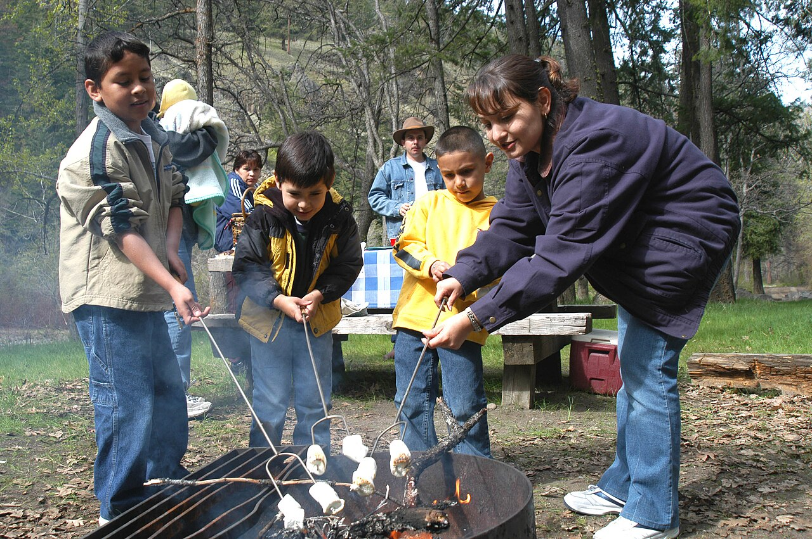

Track how many individuals and households receive support, guidance, or referrals.
Impact
Impact language that helps funders see outcomes, not just activities.
KinderHeart’s impact story is organized around measurable support categories that can later be documented through intake, referral tracking, case notes, and service reports.

Measure benefits navigation assistance, completed forms, and next-step guidance.
Document referrals to legal aid, housing resources, shelters, and partner agencies.
Show how urgent support helps families manage immediate disruptions and remain connected to care.
What success looks like
Outcomes the program can report to grant committees
- More households connected to public benefits and community resources
- Improved awareness of legal rights and available support pathways
- Increased access to housing-related referrals and stabilization options
- Faster response to urgent family crises through emergency aid coordination
- Stronger multilingual accessibility for historically underserved families
Suggested early reporting categories
- Number of clients by language supported
- Type of service requested
- Number of referrals completed
- Number of workshops or rights sessions delivered
- Client success stories or testimonials, when appropriate